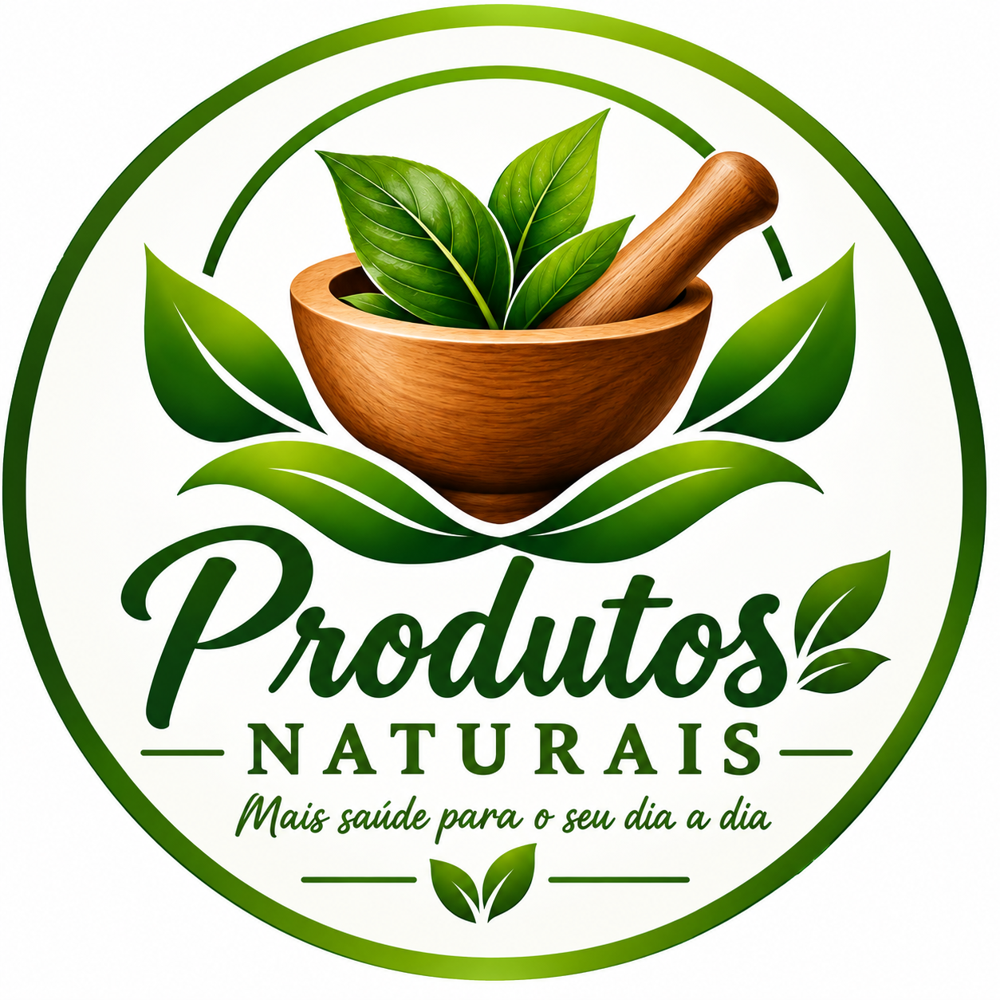
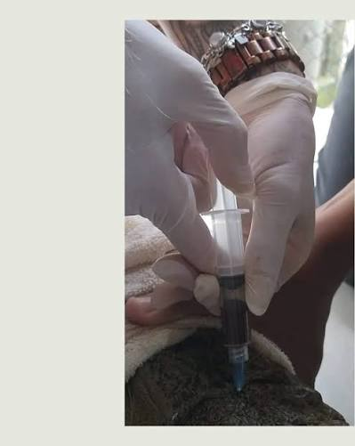
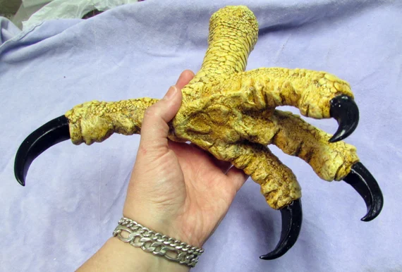

Claro, para gripe leve esses são os remédios naturais que mais ajudam a aliviar.
São pra aliviar os
sintomas, não substituem remédio de farmácia se a febre for alta.
xarope-de-cutia-com-caldo-de-paca
e-outraspmesclas-que-tambem-funcionan-
sangue-de-jacare-com-pata-de-águia-triturada

